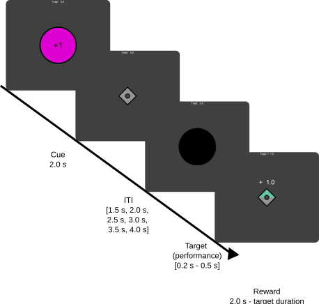

mid
Monetary Incentive Delay Task
This task is aiming at replicating the classic monetary incentive delay (MID) [^knutson2000] as used in the Adolescent Brain Cognitive Development (ABCD) study [^casey2018].
Stimuli orders were re-implemented in the code and are based on m-sequences, however, the original can be found here URL, as described in Casey et al. 2018[^casey2018].
For this project the graph structure is the following:
Task description

The participant is told to respond as quickly as possible to a target stimulus to play to win or to play to avoid losing. In each trial participants first see a cue indicating if they can win 1 or 5 points (purple circle), if they can avoid losing 1 or 5 points (yellow square) or the trial is neutral (0 outcome, blue triangle). The cue is displayed centrally for 2 s. After a variable inter stimulus interval (1.5 s, 2.0 s, 2.5 s, 3.0 s, 3.5 s, 4.0 s), where only the fixation cross is visible, the target stimulus is displayed, which is the shape of the cue in black. The duration of the target stimulus is the same length as the response window and variable. The initial response window was set to 0.35 s but changes based on the performance. The algorithm here is to check the performance every three winning trials, adding 0.025 s if the performance is worse than 60 % accuracy or subtracting 0.025 s if the performance is better. The response window was set to be bounded between 0.2 s and 0.5 s. Participants are asked to press the button with their right index finger, to respond. Immediately after the response window, the reward feedback is displayed for 2 s minus the duration of the target stimulus. If participants press the response button too early, the trial is valued as a miss and a message is displayed to not press the button too early.
As can be seen in the graph, the task is controlled by the agent_location or starting_position in that each cueing condition has a separate graph structure.